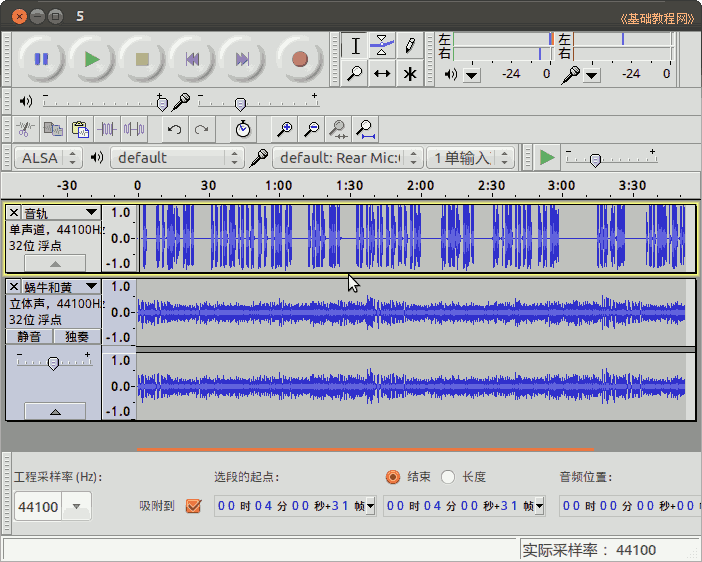

Audacity 音频编辑器教程
作者：TeliuTe 来源：基础教程网
十三、录音、编辑、合成实例 返回目录 下一课本节学习录音、降噪、合成、导出的基础知识；
1、调整音频属性和录音
1）接好耳麦，麦克风接到红色的插孔，前面板和主机箱后都可以，再点右上角的小喇叭图标，选择“声音设置”；
2）在出来的声音设置里，选择“输入”标签，调整右边的输入音量，对着话筒说话，观察下边的声音信号强度；
3）设置好以后，在Audacity窗口，点击“录音”红圆点按钮，录完后点左边的方块按钮停止录音；
4）点菜单“文件－保存”，将文件保存到自己的文件夹中，这是可编辑的工程文件；
2、降噪
1）用选择工具，选择一段两句话之间空白噪音，大概5秒钟左右即可，点菜单“特效－噪声消除”；
2）在出来的对话框，点击“取得噪声特征”，这将会分析选中的几秒钟噪声特征，这个对话框会消失；
3）再按Ctrl+A全选，点菜单“特效、噪声消除”，在出来的对话框下面，将噪声抑制适当调小到16左右，点“确定”，
如果还有细小噪声，可以再点出对话框，将抑制调为8，再“确定”重复降噪；
4）检查波形里，选中一些单独的噪音，点菜单“生成－静音”，清除掉这些个别的噪声；
5）保存一下文件；
3、配音伴奏
1）点菜单“文件－导入－音频”，打开提前准备好的音乐文件；
2）在左边音乐标签面板空白处点一下，全选导入的音乐，点菜单“特效－增幅”，拖动分界线可以缩小录音音轨的高度；
3）在出来的对话框中，将“幅度增加”设为-5，正的是放大音量，负数是降低音量，这里我们降低伴奏的音量，加大音量时打勾下面的“允许破音”；
4）用放大镜工具，点左键适当放大伴奏音轨（点右键是缩小），用选择工具，选择伴奏音乐部分，点菜单“编辑－复制”，然后在音轨末端，点“编辑－粘贴”，将伴奏加长；
5）点击录音的标签面板空白处，全选录音，再选择移动工具，将录音整体向后移动；
6）多余部分选中后，按Delete键删除，使得伴奏和录音长度相适应，点菜单“视图－适应窗口”显示全部内容；

7）保存一下文件，再点菜单“文件－导出”，导出为MP3格式即可，本课范例；
本节学习了的基础知识，如果你成功地完成了练习，请继续学习下一课内容；
本教程由86团学校TeliuTe制作|著作权所有
基础教程网：http://teliute.org/
美丽的校园……
转载和引用本站内容，请保留作者和本站链接。